Loading...
Searching...
No Matches
ME507 Marshmallow Cooker
Project Overview
The ME507 Marshmallow Cooker is an automated marshmallow roasting system designed to cook the perfect marshmallow for s'mores. Using sensor feedback and motorized positioning, the system monitors temperature and automatically adjusts the marshmallow's position and orientation to achieve a consistent, repeatable roast.
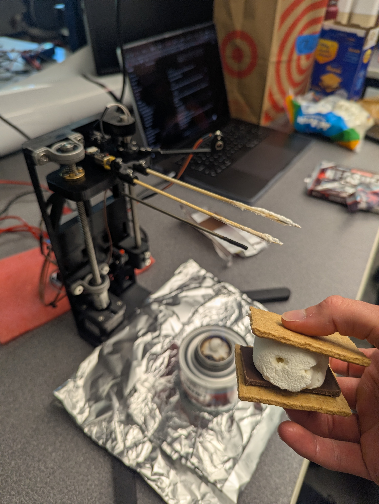
The system is based on an STM32F411 microcontroller and uses both infrared and thermocouple-based temperature measurements to monitor cooking conditions. A rotating mechanism (rotisserie) ensures an even cook, while a vertical positioning system adjusts the distance between the marshmallow and the heat source (demonstrated using a Sterno) to regulate roasting temperature. This combination of sensor feedback and motorized positioning allows the marshmallow to be cooked consistently to a desired temperature.
Video Demonstration
Click here to watch the Marshmallow Cooker in action!
Major Hardware
BOM
Here is a link to our Bill of Materials (does not include CAD components)
Rotating Motor Assembly
The rotating axis uses a Pololu 5120 gearmotor with integrated quadrature encoder. The 297.92:1, 45 rpm max motor provides slow, yet steady rotation of the marshmallow. A DRV8833 motor driver at 5V allows bidirectional PWM control from the STM32 microcontroller. A simple software driver was implemented to abstract direction control and PWM duty cycle commands.
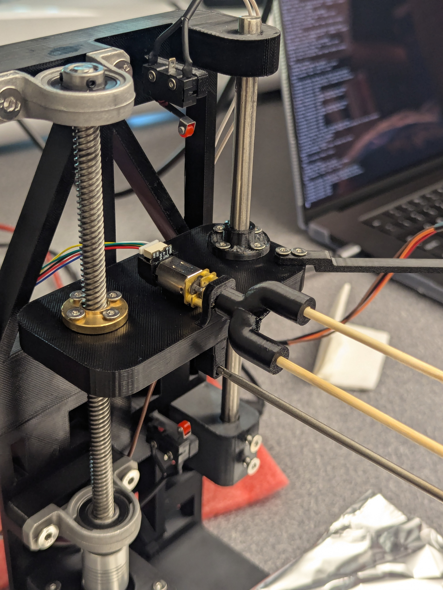
The 12 CPR quadrature encoder provides position feedback that allows the software to estimate angular position and rotational velocity. Hardware timers count the encoder ticks, measuring the angular displacement of the motor.
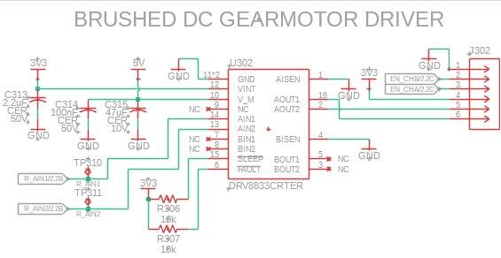
Vertical Motion System
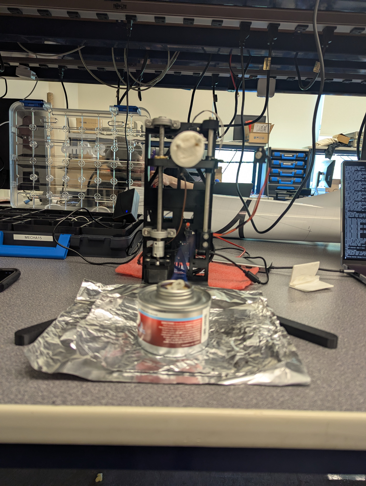
The distance between the marshmallow and the heat source is adjusted by a lead screw system powered by a stepper motor, DFRobot FIT0278 stepper motor. The motor is controlled by a TMC2209 driver at 12V. The FIT0278 has 200 steps per revolution, and the motor driver is configured for 8 microsteps per step. The result is smooth, fine control of the height of the marshmallow above the fire.
The TMC2209 stepper motor driver schematic is shown below. We installed a potentiometer into the resistor divider for VREF, so we could tune the maximum current sent to the stepper motor. Our VREF range is roughly 0.8V to 2.5V. Additionally, we selected the shunt resistor value used by the driver to sense motor current.
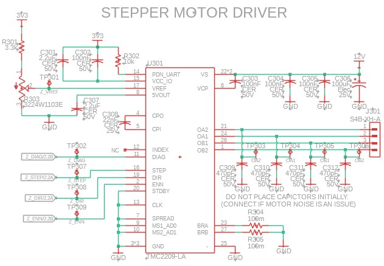
Top and bottom limit switches are used to prevent the mechanism from exceeding its allowable travel range. The limit switches are wired normally closed (NC), with internal pull up resistors configured on the STM32. When a limit switch is pressed, the ground connection is broken, and the pin is forced high by the pull up resistor. When a limit switch is pressed, the ground connection is broken and the pin is forced high by the pull-up resistor. This fail-safe design causes a disconnected cable, damaged switch, or wiring failure to be detected as an active limit condition. This fail-safe behavior causes a disconnected or damaged switch to be detected as a triggered limit condition.
Temperature Sensors

MLX90614 Infrared Temperature Sensor
The MLX90614 provides non-contact temperature measurements of the marshmallow surface. This allows surface temperature to be monitored without physically touching the marshmallow. When the marshmallow's surface reaches a set temperature, the cook is done.
The MLX90614 is an integrated IR temperature camera and I2C device. This makes implementation very simple as it does not require an amplifier or driver. The IR temperature sensor itself communicates with the STM32 via I2C CLK and SDA.
MCP9600 Thermocouple Amplifier
The MCP9600 thermocouple amplifier interfaces with a Type T thermocouple to provide direct hot-junction temperature measurements of the flame. The flame temperature is used in our control loop to adjust the height of the marshmallow.
The MCP9600 is also an I2C device. It has a configurable address pin, which is grounded, setting the address to 0x60. The hot junction temperature is read via the hardware I2C bus as the IR temperature sensor.
Custom PCB
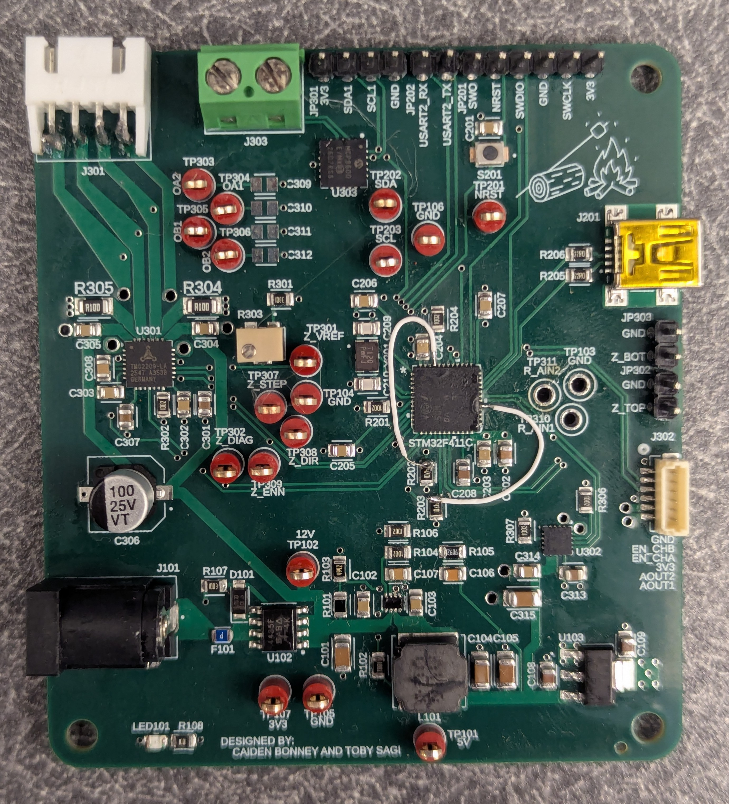
A custom PCB was designed to integrate all hardware components:
- STM32F411 microcontroller
- MCP9600 thermocouple amplifier
- MLX90614 infrared temperature sensor
- DRV8833 motor driver
- Encoder inputs
- TMC2209 stepper motor driver interface
- Limit switch inputs

The PCB simplifies wiring and provides a compact platform for system integration. Our board begins with the 12 VDC barrel plug, designed for an external wall AC to DC converter. The 12 VIN goes through a fuse (MFU0805FF03000P500) and p-fet reverse polarity circuit (SI4435FDY-T1-GE3). Then, a high efficiency switching buck regulator (MP2338GTL-Z) drops the voltage to 5V for the rotating motor. Finally, a linear dropout regulator (LDL1117S33R) reduces the voltage to 3.3V, our digital logic level (VDD).
Key PCB Design Choices:
- Internal planes for GND and VDD
- Surface mounted components only on the top layer
- Reducing high power trace lengths
- Potentiometer for TMC2209 VREF
- Pads for optional stepper motor phase decoupling capacitors
Due to the project's tight timeline, we found multiple issues with our PCB that we would fix if given time and money for another board revision.
Issues We Encountered:
- Wrong pins for I2C
- Problem: We mixed up ports A and B in the schematic. Connected traces to PA6 & PA7 instead of PB6 & PB7 for I2C1.
- Solution: Soldered 32 AWG Kynar wire to jump pins PA8 & PB8 (I2C3) to the pull up resistor and rest of the I2C pcb wiring.
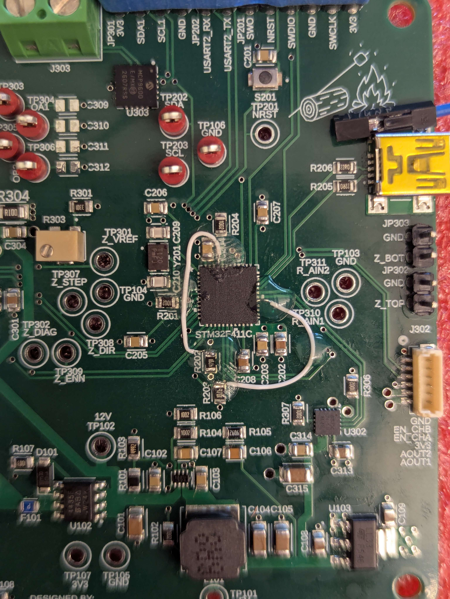
- Switching regulator placed 180 degrees
- Problem: When purchasing the PCB we probably missed seeing that the switching regulator was placed 180 degrees incorrectly.
- Solution: Used hot air soldering gun to remove the switching regulator, rotate it 180 degrees, and place it back on the pads.
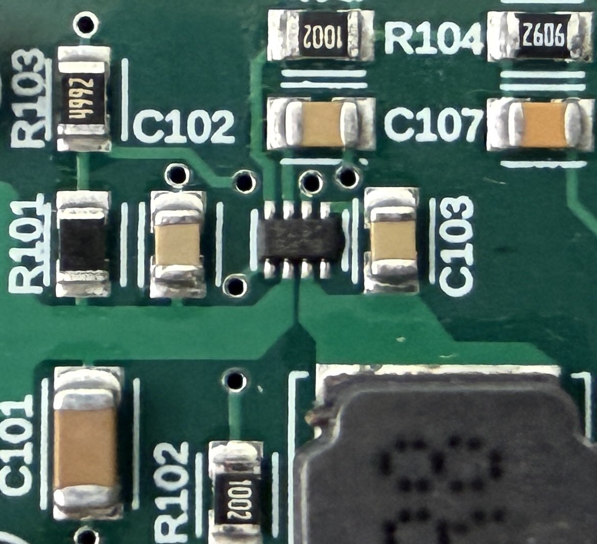
- Thru holes for stepper motor JST connector too small
- Problem: We did not verify the recommended hole size of the downloaded connector footprint. Result was vias were too small for the thru hole pins of the JST-XH connector.
- Solution: Attempted to expand the vias, but lifted the pads and some traces. Cut back the lifted traces, chipped off the solder mask to expose the copper, soldered the connector's pins onto the copper traces. Super glued the connector's body onto the board. Never unplugging the connector on the board side.
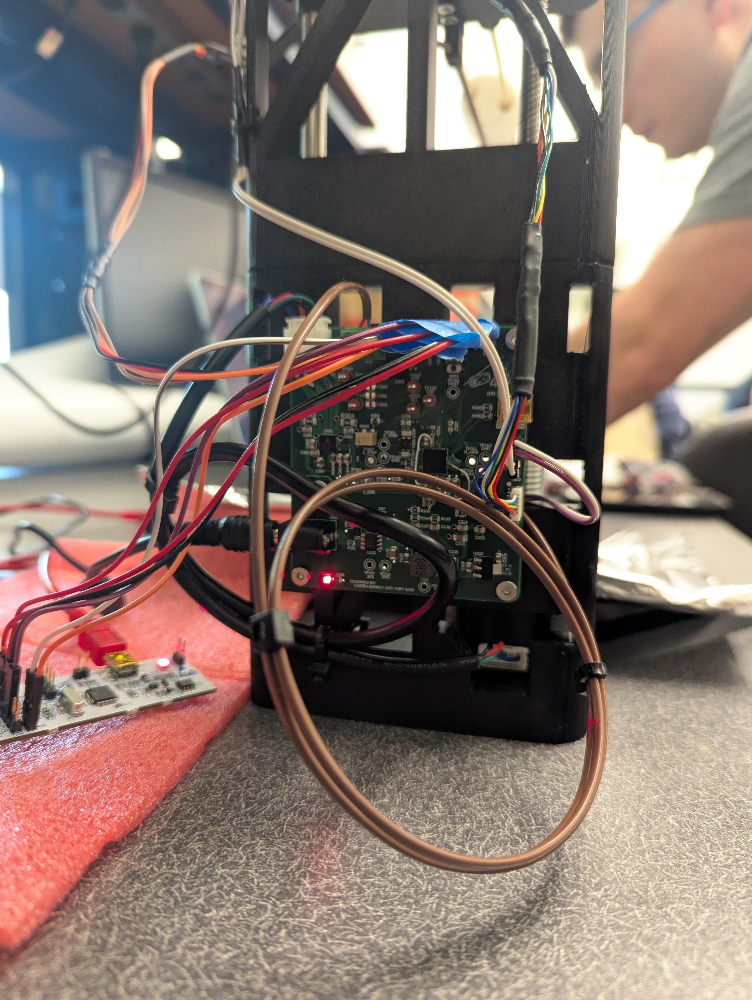
CAD
The GitHub repository contains CAD for the marshmallow cooker. This includes a main assembly file, individual part models, and hardware components such as screws and nuts. All custom components were 3D printed from PETG using a Bambu Lab P1S printer. A combination of nyloc nuts, standard nuts, and 3D-printed threaded pilot holes was used to assemble the system. Most parts were designed with additive manufacturing in mind. Where possible, support material was minimized, and "speed holes" were added to reduce print time and material usage.
The vertical gantry consists of a lead screw driven by the stepper motor and a smooth guide shaft. Because only two points define the sliding platform's plane, the mechanism can rock under the weight of the motor, thermocouple, and marshmallow. Additionally, the gantry can bind during motion. We mitigated binding by providing a small clearance fit around the guide shaft, lubricating the shaft, and commanding the stepper motor to move at least one-half revolution per motion command.
The thermocouple and marshmallow mount underwent several design iterations throughout the project. Initially, the thermocouple was attached directly to the rotating motor assembly, but the thermocouple wire wrapped around the shaft and became tangled. We first mitigated this issue by rotating 360 degrees in one direction and then 360 degrees in the opposite direction. Later, we redesigned the mount so that two skewers penetrate the marshmallow. This ensures that the marshmallow rotates with the motor while separating it from the thermocouple. Since the thermocouple no longer rotates, the wire cannot wrap around the shaft, and the marshmallow does not interfere with the temperature measurement.
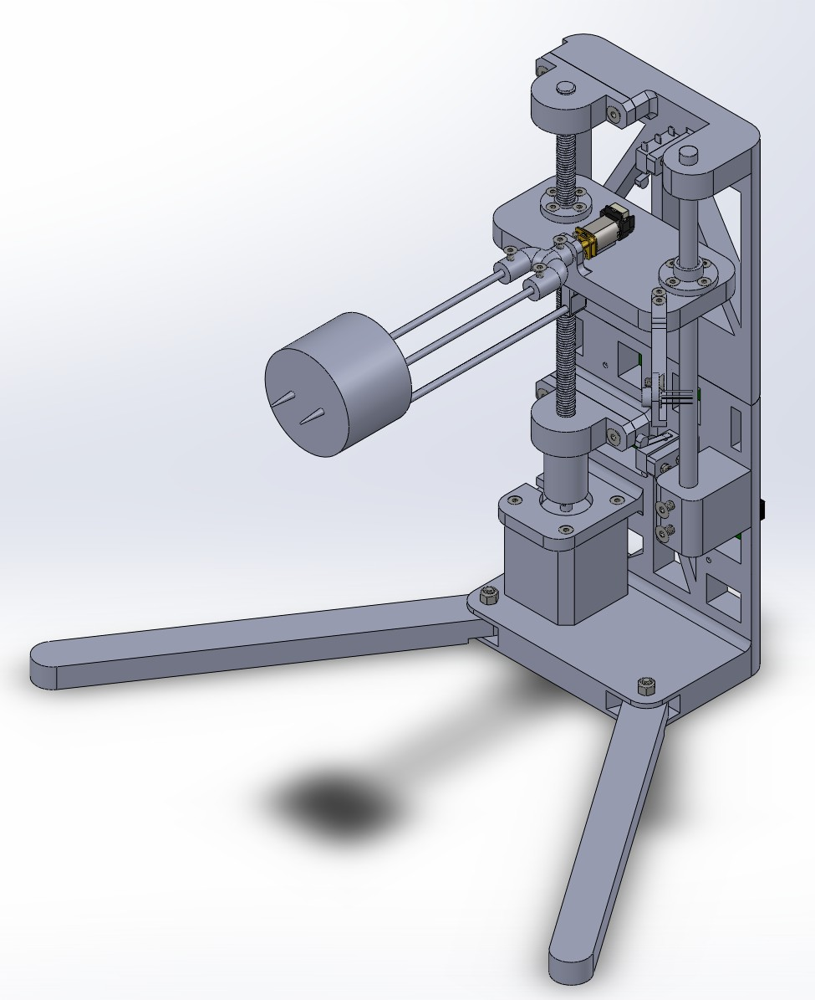
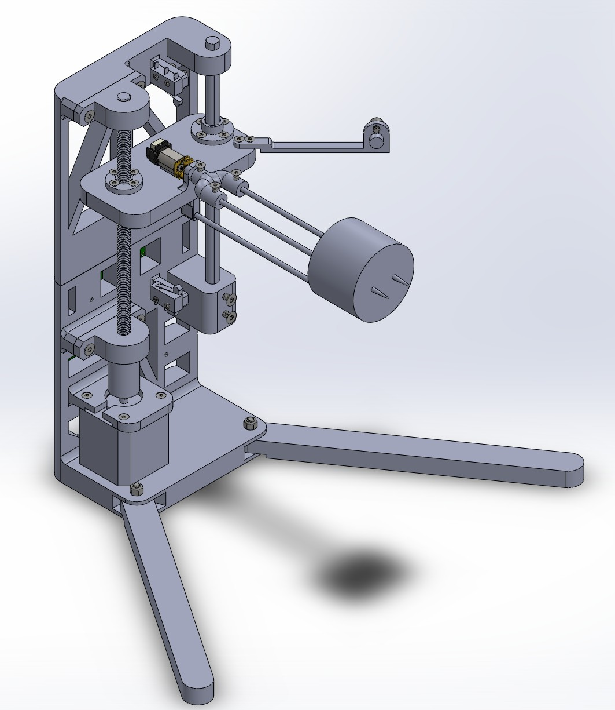
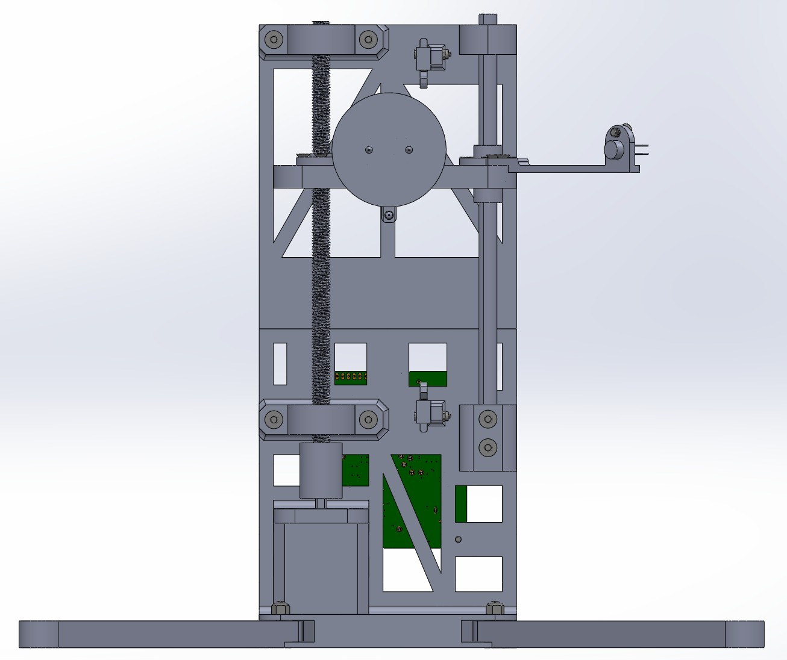
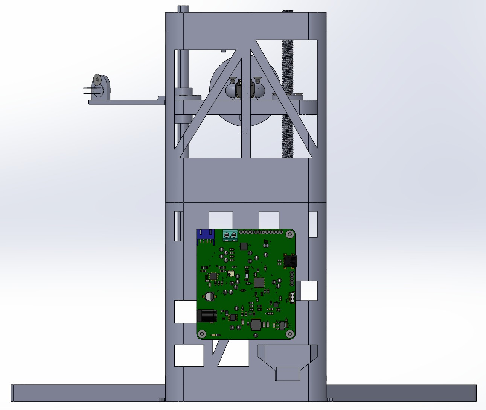
Software Architecture
The firmware is written in C++ using STM32CubeIDE and STM32 HAL.
Major software modules include:
- DRV8833 motor driver
- MCP9600 thermocouple driver
- MLX90614 infrared sensor driver
- Encoder driver
- Rotational motor driver
- Z-axis motor driver
- Z-axis limit switch driver
Hardware-specific functionality is encapsulated within dedicated driver classes, allowing higher-level control logic to remain independent of hardware implementation details.
Main Control Structure
The application uses a cooperative task structure built around the shared Task interface. After STM32Cube-generated initialization configures GPIO, USART2, I2C3, TIM1 PWM, TIM3 encoder mode, and USB device support, main() repeatedly calls the application tasks in a fixed order:
- TaskUI parses any completed user command.
- TaskTemps periodically updates the thermocouple and IR temperature readings.
- TaskCooker consumes commands, checks sensor data, and issues high-level motion requests.
- TaskRMotor updates the rotisserie motor.
- TaskZMotor updates the vertical stepper motor.
This ordering lets new command and temperature data be processed before the motor tasks act on the latest cooker decisions. The tasks are written as small non-blocking state machines using HAL_GetTick() timing instead of long blocking delays. The temperature and Z-control tasks run their scheduled logic every 500 ms, while the R motor task updates every 10 ms so encoder-driven rotation remains responsive.
User Interface
The firmware provides a serial command-line interface through TaskUI. USART2 is configured for 115200 baud, 8 data bits, no parity, and 1 stop bit. The UI task receives one byte at a time with HAL_UART_Receive_IT(), stores characters in a small interrupt-to-task queue, echoes printable input, supports backspace, and parses commands when the user presses Enter.
The user-facing cook sequence is coordinated by TaskCooker. On startup it waits for the home command, then commands TaskZMotor to home upward until the top limit switch defines Z = 0. Once homed, the cooker enters ReadyToCook and accepts start. Starting a cook moves Z to the initial cooking height, enables flame-temperature control, and then starts the R-axis rotisserie once Z reaches active control. A normal stop, completed cook, or bottom-limit condition commands the R motor back to its initial rotation and moves Z to the removal height. Faults and emergency stops immediately stop both motor tasks and require reset followed by another home before cooking again.
Supported commands are:
- home - home the Z axis against the top limit switch and prepare the cooker.
- start - begin a cooking cycle after Z has been homed.
- stop - perform a normal stop by returning R to zero and moving Z to removal height.
- estop - immediately enter the fault state and stop both motors.
- reset - clear a Fault or Done state and require another home cycle.
- status - print one status line.
- status <ms> - stream status lines for the requested duration in milliseconds.
- rotate - toggle manual R-axis cooking rotation while ready.
- piddebug on / piddebug off - enable or disable Z PID debug messages.
- - <steps> - jog Z downward by the requested number of steps.
- = <steps> - jog Z upward by the requested number of steps.
If no step count is supplied for - or =, the default jog distance is 100 steps. Status output reports the cooker state, Z task state, R task state, Z position, top and bottom limit switch states, thermocouple hot-junction temperature, and IR object temperature. print_str() sends firmware messages over USART2 and also mirrors them to USB CDC when USB support is present in the build.
Control Loop
The cooking loop uses two temperature measurements for two different jobs. TaskTemps polls the MCP9600 thermocouple amplifier and MLX90614 IR sensor over I2C3 every 500 ms. The thermocouple hot-junction reading is treated as the flame temperature used by Z-axis control, while the IR object reading is used as the marshmallow done-temperature measurement.
When start is accepted, TaskCooker commands TaskZMotor to move from the homed top reference to the starting cook position at -11000 steps. Once that move finishes, Z enters ControllingFlameTemp. The cooker then starts the R-axis cooking motion, which alternates +360 degree and -360 degree moves so the marshmallow rotates without winding wires indefinitely. Since writing code, the mechanical system has changed and this is no longer necessary. The motor could spin in one direction indefinitely.
The Z-axis PID loop runs every 500 ms with a target flame temperature of 240.00 F. Temperatures are stored as fixed-point Fahrenheit values multiplied by 100. The PID error is:
error = target flame temperature - measured flame temperature
A positive error means the measured flame temperature is too cold, so the Z target is moved downward toward the flame. A negative error means the flame is too hot, so the Z target is moved upward. The default gains are Kp = 1.0, Ki = 0.02, and Kd = 0.10. Each PID update is clamped to +/-750 steps with a +/-100 step deadband, and the integral term is limited to reduce wind-up. Software limits prevent commands above the home position or below the -16000 step lower cook limit.
Cooking completes when the IR object temperature reaches 250.00 F continuously for 1.5 seconds. At that point the cooker begins a normal stop: the R motor returns to encoder zero and Z moves to the -500 step removal height. If a motor fault or emergency stop occurs, the cooker enters Fault, stops motion, and waits for a reset sequence.
How to Improve the Control Loop
The thermocouple has a very large time constant. This means it takes a long time for the hot-junction temperature to respond to changes in the surrounding air temperature. This is undesirable because the Z-axis height control loop is closed using a sensor that is effectively reporting old data. We mitigated this issue by tuning relatively low PID gains. As a result, the vertical motion responds slowly, giving the thermocouple more time to approach the true temperature before additional control actions are taken. This behavior could be improved by using a thermocouple with lower thermal mass and, therefore, a smaller time constant.
Repository Structure
ME507MarshmallowCooker
├── CAD
├── docs
├── Fusion
├── Marshmallow_Cooker
│ ├── Core
│ └── Drivers
├── Doxyfile
└── README
Repository
GitHub Repository: